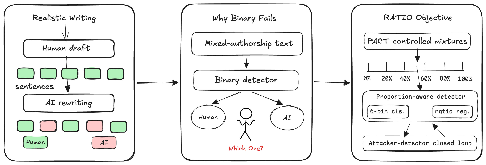

Project Page
RATIO: Robust AI Text Involvement Estimator
A two-stage detector for fine-grained AI involvement ratio estimation in mixed-authorship text.
Motivation

Method
RATIO first trains a proportion-aware detector on PACT mixed-authorship documents, then improves robustness with RCDPO training on clean and rewritten pairs.
Data
PACT provides controlled human-AI mixed text with document-level ratio labels and sentence-level provenance labels.
Paper: Replace this anchor after release.
PACT Construction Demo: The demo at uspa.zhangbh.com illustrates the dataset construction workflow used by PACT.